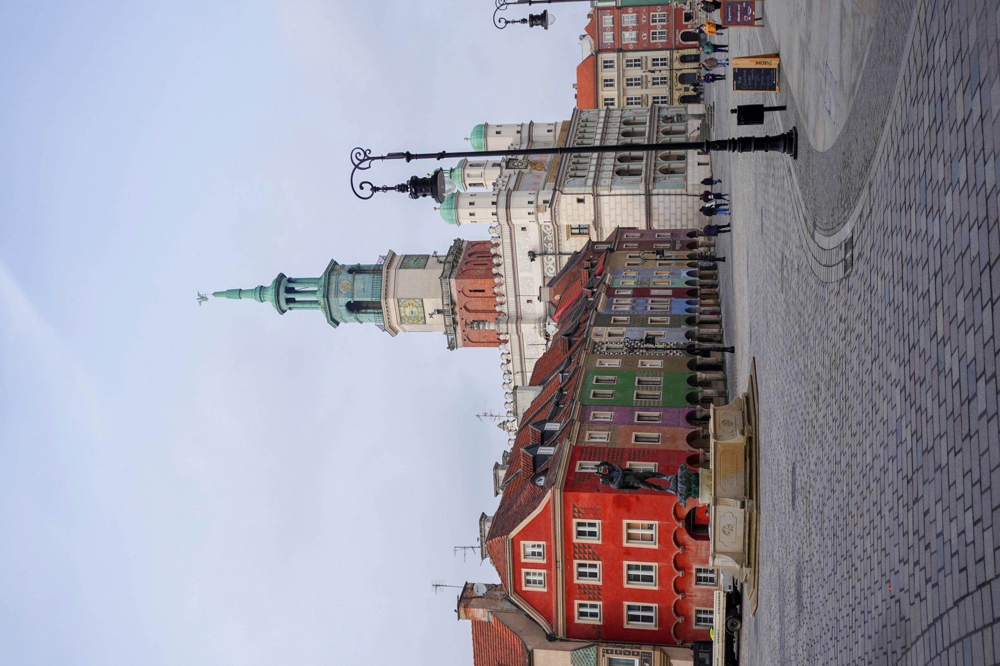

21–29 marca 2026
Jarmark Wielkanocny
Stoiska z regionalnymi przysmakami, rękodziełem i świątecznymi wypiekami oraz warsztaty dla dzieci. W 2026 roku jarmark odbył się na Placu Wolności zamiast na Starym Rynku.
Plac Wolności

Przewodnik dla odwiedzających
148 sprawdzonych atrakcji w ośmiu kategoriach, z godzinami otwarcia, cenami biletów i dojazdem. Do tego gotowe plany zwiedzania i wszystko, co trzeba wiedzieć przed przyjazdem.
Wtorek
Bezpłatne wystawy stałe m.in. w Muzeum Narodowym i Muzeum Archeologicznym. Inne dni bezpłatne
Poniedziałek
Większość muzeów jest zamknięta. Co robić w poniedziałek
12:00
Koziołki trykają się codziennie na wieży ratusza. Przyjdź kilka minut wcześniej.
18 zł
Bilet 24-godzinny na tramwaje i autobusy w strefie A. Kupisz go kartą w pojeździe. Ceny biletów
Pierwszy raz w Poznaniu?
Najważniejsze zabytki i ulubione miejsca poznaniaków. Większość leży w centrum, w zasięgu spaceru.
 Bezpłatnie
BezpłatnieZabytki i historia
Serce miasta od XIII wieku. Renesansowy ratusz i koziołki trykające się w południe.
BezpłatneDla dzieci
Szczegóły Katedra bezpłatnie
Katedra bezpłatnieZabytki i historia
Najstarsza katedra w Polsce. Groby pierwszych władców i Złota Kaplica.
Bezpłatne
Szczegóły Pn nieczynne
Pn nieczynneZabytki i historia
Multimedialna opowieść o początkach państwa polskiego, naprzeciw katedry.
Dla dzieci
Szczegóły Rezerwuj wcześniej
Rezerwuj wcześniejMuzea
Pokaz o rogalach świętomarcińskich przy Starym Rynku. Bilety warto kupić wcześniej.
Dla dzieci
Szczegóły Wstęp wolny
Wstęp wolnyKościoły
Barokowa bazylika z organami Ladegasta. Koncerty w każdą sobotę o 12:15.
Bezpłatne
Szczegóły Wt wstęp wolny
Wt wstęp wolnyZabytki i historia
Zamek Przemysła II z Muzeum Sztuk Użytkowych i 43-metrową wieżą widokową.
Szczegóły Codziennie
CodziennieZabytki i historia
Neoromańska rezydencja Wilhelma II z lat 1905–1910. Dziś Centrum Kultury Zamek.
Szczegóły Bezpłatnie
BezpłatnieWspółczesny Poznań
XIX-wieczny browar Huggerów przebudowany na centrum handlu i sztuki, z rzeźbami Mitoraja i nagradzaną architekturą.
Bezpłatne
Szczegóły Bezpłatnie
BezpłatnieParki i przyroda
Sztuczne jezioro z torem regatowym. Spacery, rowery i atrakcje przez cały rok.
BezpłatneDla dzieci
Szczegóły Bezpłatnie
BezpłatnieWspółczesny Poznań
Trójwymiarowy mural z trębaczem na dachu, tuż obok Bramy Poznania.
Bezpłatne
SzczegółyKategorie
Gotowe trasy
Trasy na 1, 2 lub 3 dni, z dziećmi, na deszcz, za darmo i na poniedziałek.
Na pierwszy dzień, najlepiej od wtorku do soboty
Na drugi dzień
Na trzeci dzień albo na ładną pogodę
Rodziny z dziećmi w wieku przedszkolnym i szkolnym
Gdy pada albo jest zimno
Przy ograniczonym budżecie
Gdy większość muzeów ma dzień przerwy
Planowanie wizyty
Z lotniska Ławica do dworca co kilka minut jeżdżą autobusy 148 i 159.
Ceny biletów ZTM i jak zapłacić kartą w tramwaju.
Bezpłatny wstęp do większości muzeów i zniżki.
Punkty na Starym Rynku, pl. Kolegiackim, lotnisku i w Bramie Poznania.
Kiedy wejść za darmo, a kiedy muzea są zamknięte.
Szpitale, nocna pomoc lekarska, dentysta i apteki.
Gdzie są przy trasach turystycznych i w jakich godzinach.
Strefy płatnego parkowania, ceny i parkingi Park&Ride.
Historia, legendy, gwara, kuchnia i pogoda.
Opera, filharmonia, taniec i teatr lalek. Co zrozumiesz bez polskiego.
Kalendarz
21–29 marca 2026
Stoiska z regionalnymi przysmakami, rękodziełem i świątecznymi wypiekami oraz warsztaty dla dzieci. W 2026 roku jarmark odbył się na Placu Wolności zamiast na Starym Rynku.
Plac Wolności
19 kwietnia 2026
Bieg na 21,097 km ulicami miasta. W 2026 roku metę minęło 13 505 osób.
Ulice Poznania
16 maja 2026
Jedna noc w roku, gdy muzea, galerie, teatry i inne instytucje kultury są otwarte do późna i przygotowują specjalny program.
Muzea i instytucje kultury w całym mieście
31 maja – 3 czerwca 2026
Festiwal jazzu i muzyki improwizowanej nad Jeziorem Strzeszyńskim. Dyrektorem artystycznym jest pianista Leszek Możdżer. W 2026 roku odbyła się 16. edycja: 11 koncertów w cztery dni.
Jezioro Strzeszyńskie
11–14 czerwca 2026
Festiwal muzyki świata: artyści z wielu krajów oraz polscy wykonawcy muzyki tradycyjnej. W 2026 roku odbyła się 19. edycja.
Centrum Kultury Zamek, ul. Święty Marcin 80/82
19–21 czerwca 2026
Festiwal fantastyki: gry, komiksy, cosplay, literatura, film i seriale. W 2026 roku obchodził 25-lecie i miał ponad 2000 punktów programu. Wstęp jest biletowany.
Międzynarodowe Targi Poznańskie
21–28 czerwca 2026
Jeden z najważniejszych festiwali sztuki w Polsce: teatr, taniec, muzyka, sztuki wizualne i film. Wiele wydarzeń odbywa się na ulicach i placach. W 2026 roku festiwal otworzyło bezpłatne widowisko nad Jeziorem Maltańskim.
Jezioro Maltańskie i miejsca w całym mieście
4 października 2026
Bieg maratoński ulicami miasta, nazwany imieniem Macieja Frankiewicza, byłego zastępcy prezydenta Poznania.
Ulice Poznania
8–24 października 2026
Międzynarodowy konkurs dla młodych skrzypków, organizowany przez Towarzystwo Muzyczne im. Henryka Wieniawskiego w Poznaniu. Uczestnicy z całego świata grają w kolejnych etapach przesłuchań, a konkurs kończy się finałem i koncertami laureatów. Bilety sprzedaje organizator.
Poznań
23–25 października 2026
Targi gier komputerowych i rozrywki multimedialnej, według organizatora największe w Europie Środkowo-Wschodniej. Wstęp jest biletowany.
Międzynarodowe Targi Poznańskie
11 listopada 2026
Największe święto miasta, obchodzone od 1994 roku i organizowane przez Centrum Kultury Zamek. Trwa od przedpołudnia do wieczora: kiermasz rogali świętomarcińskich, koncerty, spektakle i atrakcje dla rodzin. Prezydent Poznania przekazuje świętemu Marcinowi klucze do miasta.
ul. Święty Marcin, przy Centrum Kultury Zamek
14 listopada – 20 grudnia 2026
Jarmark bożonarodzeniowy na terenie Międzynarodowych Targów Poznańskich, kilka minut pieszo od dworca Poznań Główny.
Międzynarodowe Targi Poznańskie
11–13 grudnia 2026
Festiwal rzeźby lodowej: rzeźbiarze z kilku krajów tworzą na oczach widzów kilkumetrowe rzeźby z brył lodu, piłami mechanicznymi i dłutami. W 2026 roku startuje 24 rzeźbiarzy.
Stary Rynek
Najbliższe terminy nie są jeszcze ogłoszone. Sprawdź, kiedy zwykle odbywają się wydarzenia, w kalendarzu.
Kalendarz wydarzeń na cały rok
Bieżący program kulturalny: kultura.poznan.pl